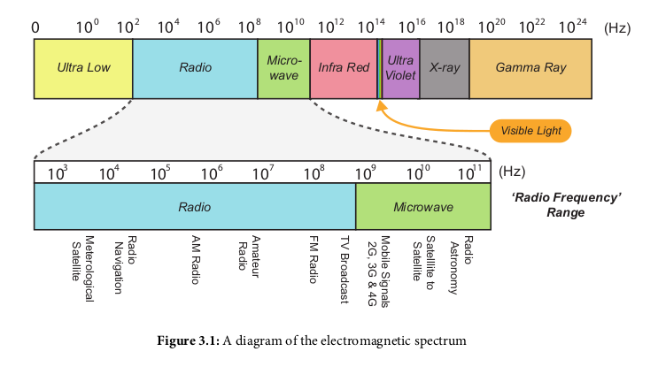
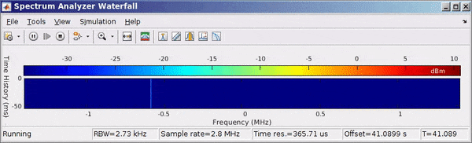

Range 3kHz - 300GHz
Translates baseband information (music, voice, data, etc.) into the allocated frequency band. Demodulation translates from frequency band into baseband.
Can be designed for directional gain and specific frequencies (narrowband antenna) or non-directional low gain (broadband antenna)
The cable length and number of adapters should be kept to a minimum as they act as filters and degrade signal quality
The frequency range of your signal based off of your sample frequency. Your range is within [fc - fs/2, fc + fs/2], Where fs is the sample frequency (width) and fc is the center frequency
Allows multiple users to access a single channel by dividing access into time slots. Used by GSM 2G wireless standard.
Uses a wider bandwidth (5MHz for 3G wireless) as a "spread spectrum" allowing multiple users to access the signal at the same time by assigning a code for that unique device which is specified in a broadcast signal. So all phones would receive the signal but ignore it if their code doesnt match
Uses both time and frequency division to assign resources to individual users. Used by 4G wireless standard.
A frequency range of a certain bandwidth used to separate to other frequency areas in a channel to make sure they don't accidently overlap and interfere with each other. This range is empty and only used to fill space like a block.
Generally use 433 MHz (Car key fobs use 433.9 MHz). A google search of the FCC ID on a keyfob I had brought me here: https://fccid.io/ELVATNB which sure enough specified a frequency of 433.92 MHz.
After setting the center frequency to this in the matlab model, you can see the signal show up on the waterfall when the keyfob is pressed:
Transmits the coded information on 1000 or more orthogonal RF carriers. Used by DVB-T DTV signals. Used by the unmodified versions of the RTL-SDR (originally DTV receivers)
Viewing a larger bandwidth of frequency by repeatedly increasing/decreasing the center frequency then recording the data